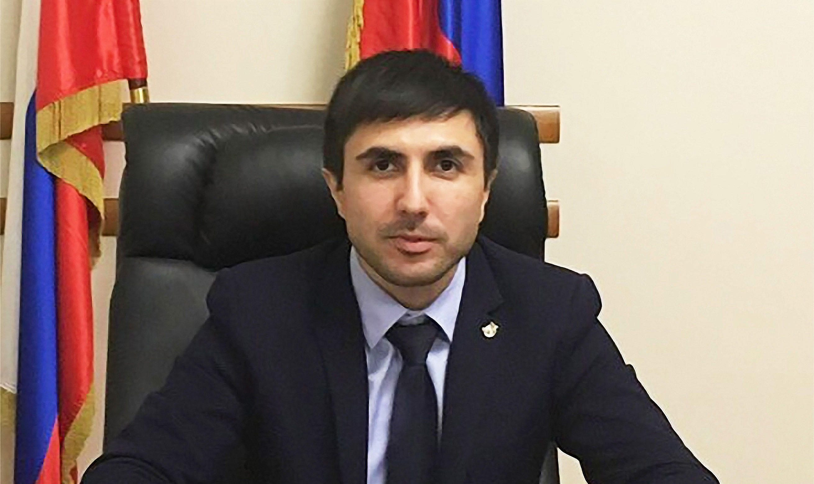

Переписной «автопортрет» СКФО
Эксклюзивное интервью с Мурадом Ибрагимовым
Мурад Ибрагимов — старший научный сотрудник НИИ разработки глобальных проблем межконфессиональных отношений, этнополитики и этнокультуры Пятигорского государственного университета, член рабочей группы по профилактике и предупреждению межнациональных конфликтов при Координационном совете Министерства науки и высшего образования Российской Федерации, кандидат филологических наук.
— Мурад Асимович, видимо, в текущем году перенесённая перепись населения всё же состоится?
— Надеюсь, больше ничто не сможет этому помешать. Основной этап Всероссийской переписи населения должен был пройти с 1 по 31 октября 2020 года. Но из-за COVID-19 правительство перенесло его на сентябрь, а потом на октябрь нынешнего года.
Значение переписных кампаний, которые проводились в разных странах с древности, трудно переоценить. Чтобы развивать государство, необходимо владеть информацией о количественном и качественном составе его граждан. Иначе любое планирование будет неэффективным.
— Во всех регионах России перепись пройдёт по одному сценарию?
— Скажем так: в соответствии с единой нормативной базой, но с учётом региональной специфики. Было бы странно её не учитывать: в нашем государстве есть регионы с огромной площадью и мизерной плотностью населения, а также территориально небольшие, но густонаселённые.
Необходимо учитывать и этническое многообразие территорий, их демографическую динамику, уровень занятости населения и многое другое.
— Видимо, такой подход особенно актуален на Северном Кавказе, который представлен большим количеством этнических общностей?
— Совершенно верно. Одной из главных проблем всех переписей является проблема полноты учета мнения населения. И эти результаты особенно ждут в «многотитульных» республиках СКФО, в которых изменение удельного состава национальностей имеет важное политическое значение.
— Вы являетесь одним из кураторов проекта, поддержанного Фондом президентских грантов: «Автопортрет Северного Кавказа: перепись населения 2020» — создание общественно-мониторингового навигатора. Расскажите об этом, пожалуйста, подробнее.
— В рамках данного проекта планируется проведение исследований по выявлению потенциально проблемных «точек» на основе данных предыдущих переписей. Будут исследованы показатели проживания и взаимодействия различных этнических групп и разработана соответствующая карта.
— Простите, вопрос «по ходу»: какие именно факторы могут влиять на указанную «проблемность»?
— Например, количественные показатели. В «полиэтнических» субъектах СКФО особую роль приобретает численность того или иного этноса. Часто именно от этого зависит распределение ресурсов. Как материальных (например, пастбищных земель), так и нематериальных (неформальное квотирование мест в представительных органах).
Это и самоидентификация народов Кавказа. Объективный вопрос: как обозначить свою национальность в переписи? Если для моноэтничных регионов он не особо актуален, то для субъектов СКФО — жизненно важен.
Некоторые группы считают, что неправильный учет численности их общности повлияет на этническую самоидентификацию, сохранение и развитие культуры в целом. Подобные проблемные точки есть, все они должны быть учтены.
— Продолжим тему реализации проекта. Что делается в его рамках сейчас и что запланировано?
— Идёт формирование экспертной команды, которая установит связи по взаимодействию с представителями национальных диаспор и этнических групп. В период подготовки и проведения переписи командой проекта при взаимодействии с лидерами диаспор будут созданы штабы в субъектах СКФО, собирающие сведения о ходе переписи и возможных нарушениях.
Запланированы встречи экспертов проекта с представителями национальной общественности в регионах округа. Всем представителям диаспор будут предоставлены печатные материалы по переписи.
В ходе кампании предполагается оперативная обработка каждого входящего сигнала о возможных нарушениях. Эти факты будут переданы экспертам для обсуждения проблемы с Росстатом, штабом проведения переписи.
Будет проведено не менее трёх публичных лекций по вопросам переписи, с привлечением экспертов. Мероприятия пройдут в разных субъектах СКФО на базе вузов. Запланирован живой обмен мнениями, публикация независимых экспертных оценок и публичных докладов на страницах электронных СМИ, являющихся партнерами проектов. По итогам этой работы будет проведена пресс-конференция.
Предусмотрено ещё множество мероприятий в рамках проекта, которые будут широко освещаться в СМИ и сетевом пространстве.
— Очевидно, усилия в этом направлении трудно переоценить...
— Да, Вы правы. Одной из фундаментальных проблем всех переписей является проблема полноты учета мнения населения. На фоне реформ, проводимых сегодня в общественно-политической сфере страны, остро ощущается нехватка обновленной социально-демографической информации. Поэтому перепись текущего года представляет собой не только государственное мероприятие по учету населения, но и важнейший социальный заказ. Соответственно, эффективная реализация проекта «Автопортрет Северного Кавказа: перепись населения 2020» представляется очень актуальной. Надеюсь, всё получится.